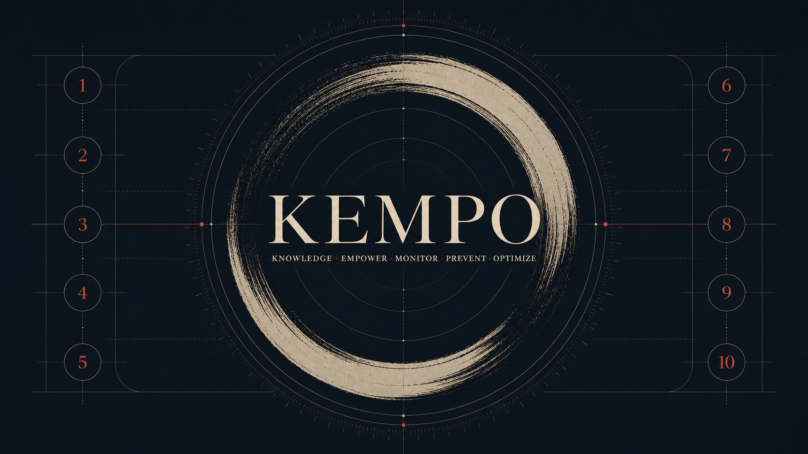

How We Reason
TWiN Compass
Source material for moral reasoning and behavioral-health awareness.

KEMPO
Human-scored scenarios for examining AI judgment under pressure.
Distinct roles: material for reasoning, and a practice for evaluating judgment.